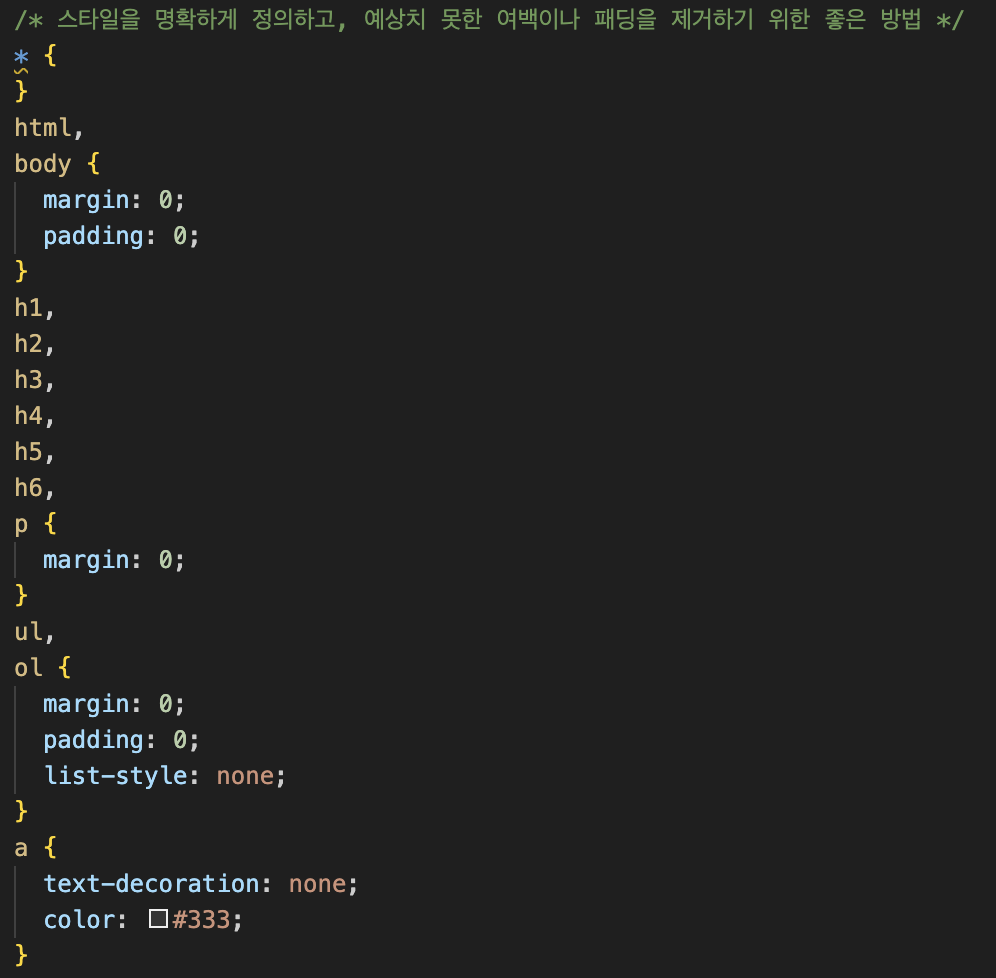
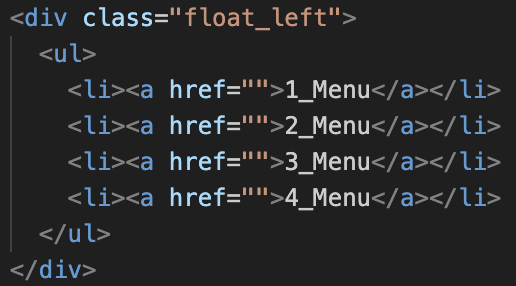
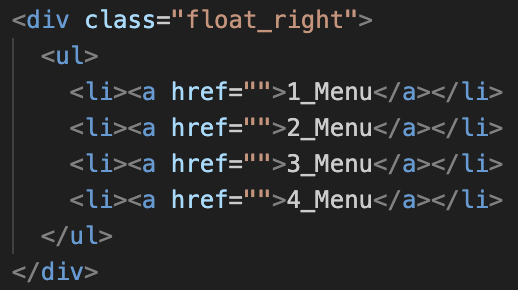
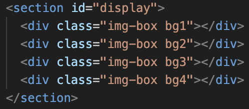

float(띄우다) : 부모공간에서 좌측으로 가로정렬시킬 것이다.
display:
//block / inline / inline-block / none
// table(부모) / table-cell(자식)
// flex(부모가 자식의 위치를 변경시켜 주는 명령자)
position : static, relative, absolute, fixed
< CSS 시작 부분 코드 및 설명 >

항구에 배가 하나씩만 정착하는 순서를 생각하면 됨
float은 center를 잡지 못한다.float은 쓰지 않는게 좋다
< 사용법 >
< 사용법 >

display : inline은 글자 공간을 조정할 때 사용한다. 또는 공간을 가진 것을 조정할 때 사용한다.
< 사용법 >
